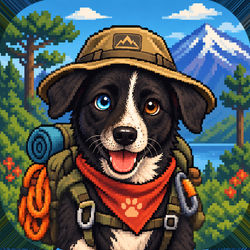
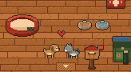
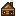

Kulliñ

Invitación
¡Te invitaron a Kulliñ!
Camina con tu mascota y descubre la flora, la fauna y la funga de Chile.
Código de amigo
Gratis para Android.
Lo que harán juntos

Visitar sus refugiosSus mascotas juegan juntas en el living, el gimnasio y el baño.
Comparar sus guíasMira las especies que vio y descubre cuáles te faltan.
Correr en el circuitoIntenta superar su mejor tiempo en el gimnasio.
Cómo aceptar
- Instala Kulliñ desde el botón de arriba.
- Adopta tu mascota y termina el recorrido por el refugio.
- La invitación aparece sola: activa Amigos y envía la solicitud.
¿Qué es Kulliñ?
Un juego educativo para Android: tus caminatas reales se convierten en expediciones por 14 ecosistemas de Chile, del desierto florido a los fiordos del sur.
Cada especie que encuentras se revela de a poco en tu guía, con su información y datos curiosos.
Para protegerla, primero hay que conocerla.